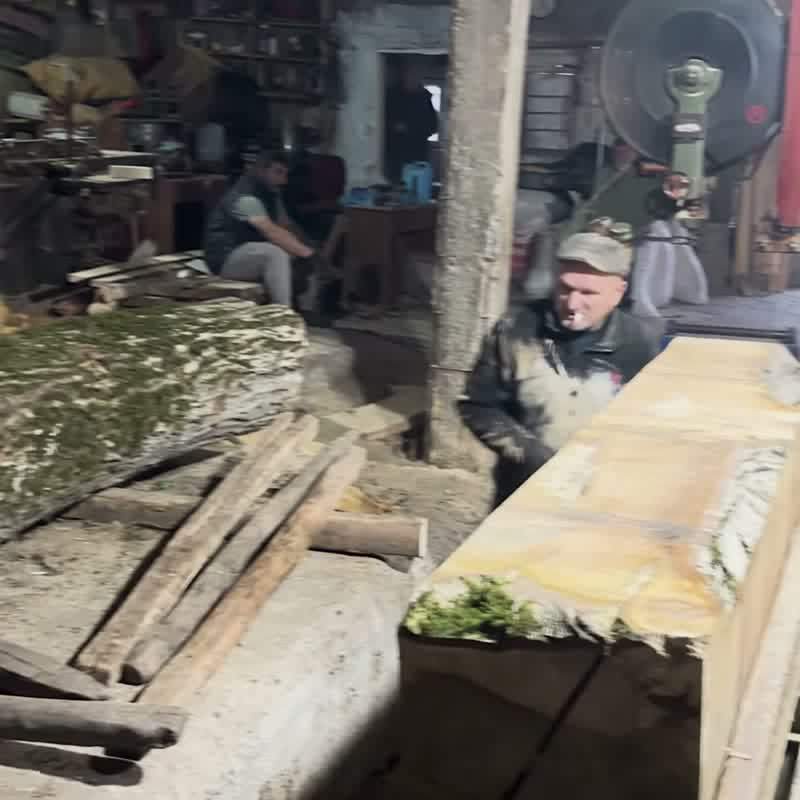
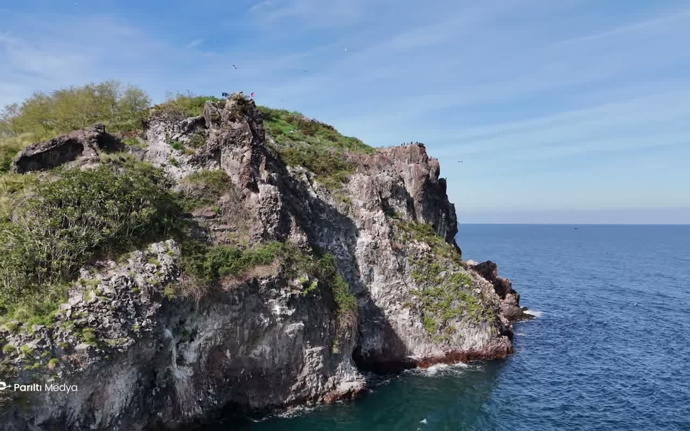
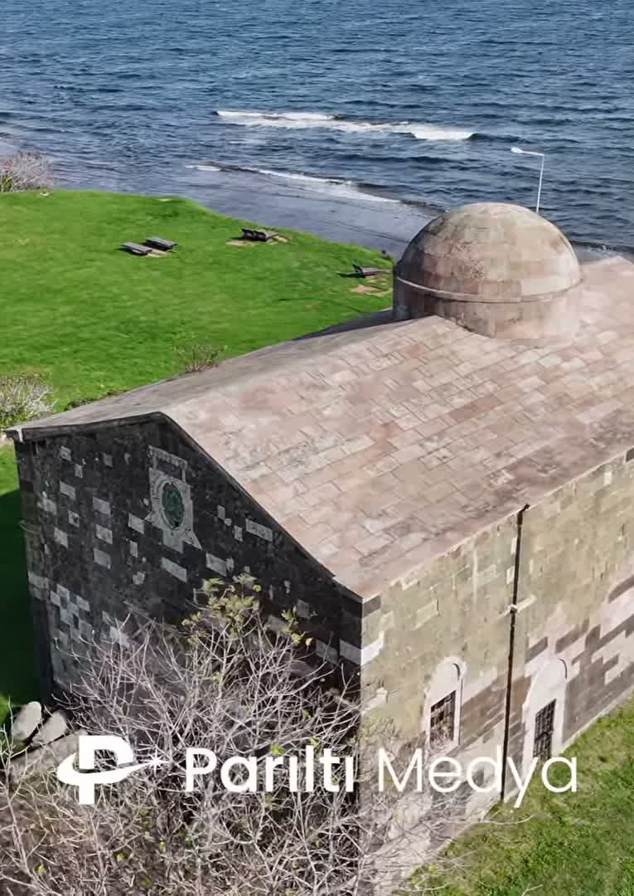
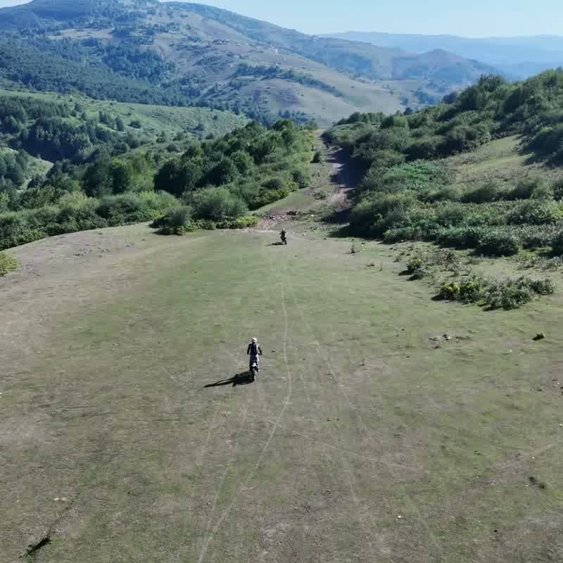
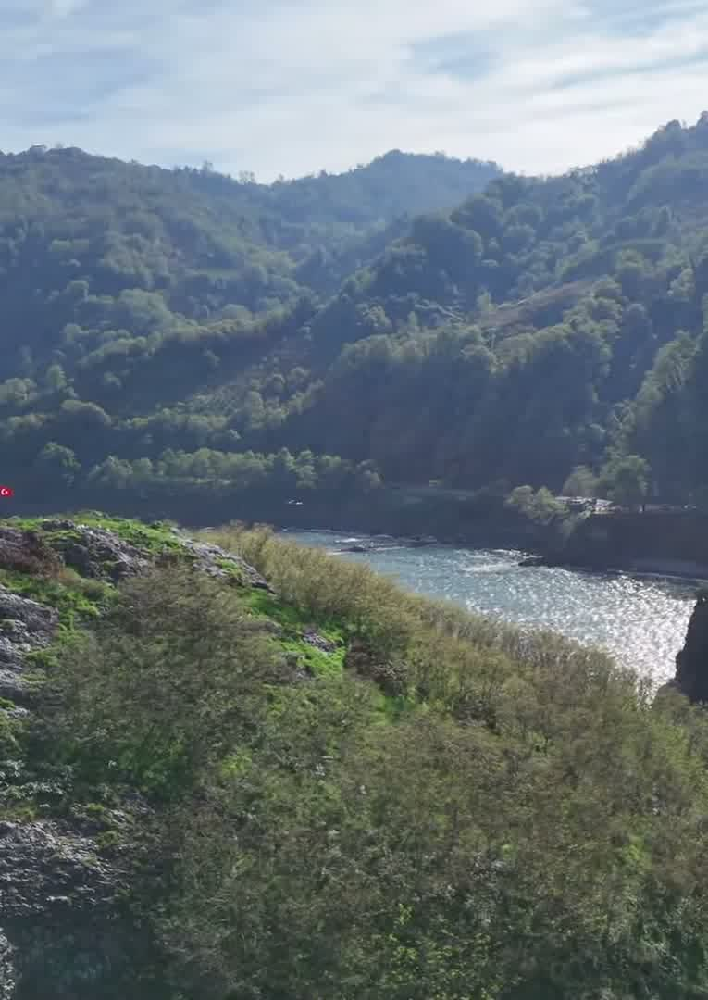
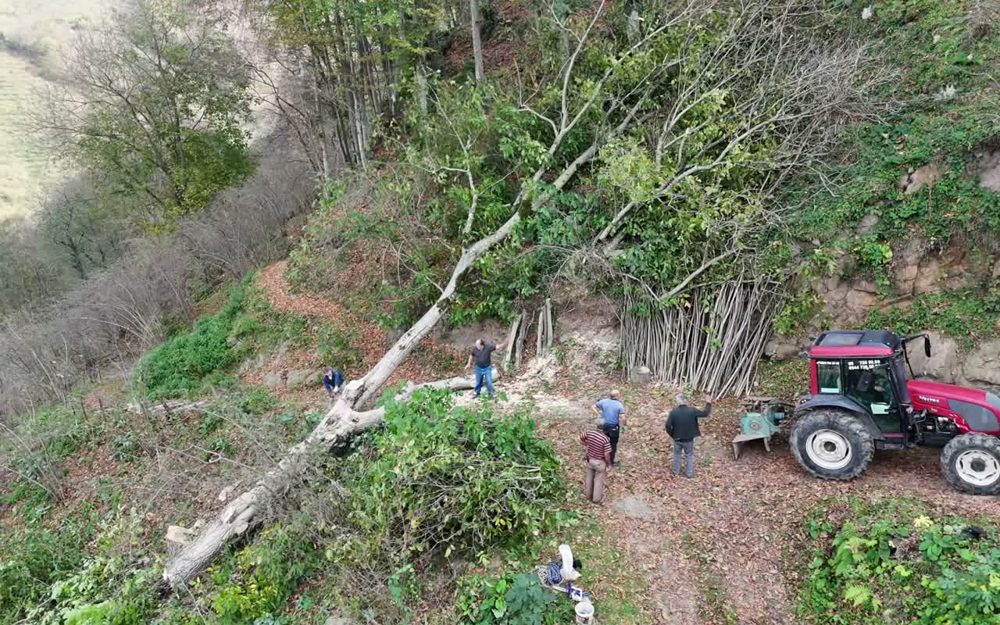
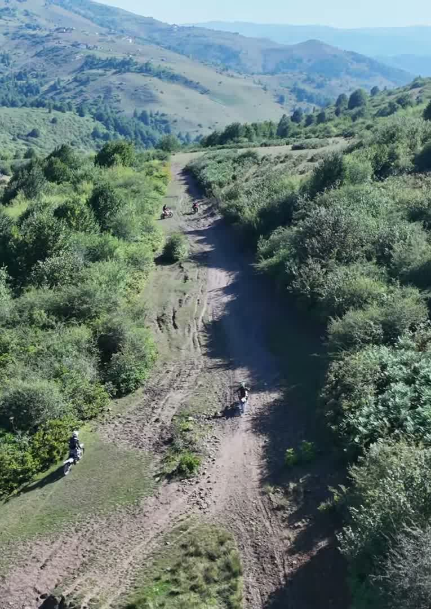

Stories told from above
Ready to see your story from the sky?
Plan
We start with the location and the story: what should be shown, at what time of day and from which angles. Light, weather and flight paths are worked out before the drone leaves the ground.
Fly & film
On location we fly slow, deliberate moves — reveals, orbits and fly-overs — and add ground-level footage whenever the story needs to get closer.
Edit & deliver
Back at the desk the footage is cut, graded and finished with sound, then delivered in the formats you need for web, social media or screen.


Where the sky meets the story
Aerial drone filming
Smooth, cinematic footage from the air: coastlines, landscapes, villages, buildings and everything that looks better from above.
Aerial photography
High-resolution stills taken from the same vantage points as our films, ready for web, print and social media.
Video production
Short films and documentaries that combine aerial and ground footage to tell a complete story.
Editing & color grading
Careful editing, sound and color work that turn raw footage into a finished film.
Latest
films
A Quiet Island in the Blue
Hoynat Island sits a hundred metres off the coast of Perşembe, Ordu. Nobody lives there except the seabirds, and that is exactly why it matters.
Into the Heart of Nature
From a highland pond and open pasture down to the cliffs of the Black Sea: two minutes of nature's untold stories, and a short guide to the landscapes behind them.
The Life of a Log: From Tree Cutting to Carpentry
From a hillside tree to boards on the sawmill floor: a two-minute woodworking journey that follows a single log through every pair of hands.
Jason Church (Yason Kilisesi), Ordu
A 19th-century stone church on the cape where Jason and the Argonauts are said to have come ashore. The history, the myth and the view from above.








